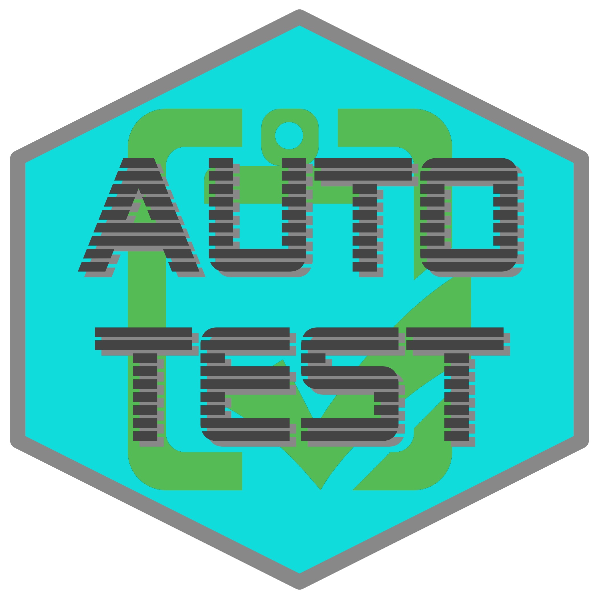

autotest 
Automatic mutation testing of R packages. Mutation in the sense of mutating inputs (parameters) to function calls. autotest primarily works by scraping documented examples for all functions, and mutating the parameters input to those functions.
Installation
The easiest way to install this package is via the associated r-universe. As shown there, simply enable the universe with
options (repos = c (
ropenscireviewtools = "https://ropensci-review-tools.r-universe.dev",
CRAN = "https://cloud.r-project.org"
))And then install the usual way with,
install.packages ("autotest")Alternatively, the package can be installed by running one of the following lines:
# install.packages("remotes")
remotes::install_git ("https://git.sr.ht/~mpadge/autotest")
remotes::install_bitbucket ("mpadge/autotest")
remotes::install_gitlab ("mpadge/autotest")
remotes::install_github ("ropensci-review-tools/autotest")The package can then be loaded the usual way:
Usage
The simply way to use the package is
x <- autotest_package ("<package>")The main argument to the autotest_package() function can either be the name of an installed package, or a path to a local directory containing the source for a package. The result is a data.frame of errors, warnings, and other diagnostic messages issued during package auotest-ing. The function has an additional parameter, functions, to restrict tests to specified functions only.
By default, autotest_package() returns a list of all tests applied to a package without actually running them. To implement those tests, set the parameter test to TRUE. Results are only returned for tests in which functions do not behave as expected, whether through triggering errors, warnings, or other behaviour as described below. The ideal behaviour of autotest_package() is to return nothing (or strictly, NULL), indicating that all tests passed successfully. See the main package vignette for an introductory tour of the package.
What is tested?
The package includes a function which lists all tests currently implemented.
autotest_types ()
#> # A tibble: 27 × 8
#> type test_name fn_name parameter parameter_type operation content test
#> <chr> <chr> <chr> <chr> <chr> <chr> <chr> <lgl>
#> 1 dummy rect_as_other <NA> <NA> rectangular Convert … "check… TRUE
#> 2 dummy rect_compare_… <NA> <NA> rectangular Convert … "expec… TRUE
#> 3 dummy rect_compare_… <NA> <NA> rectangular Convert … "expec… TRUE
#> 4 dummy rect_compare_… <NA> <NA> rectangular Convert … "expec… TRUE
#> 5 dummy extend_rect_c… <NA> <NA> rectangular Extend e… "(Shou… TRUE
#> 6 dummy replace_rect_… <NA> <NA> rectangular Replace … "(Shou… TRUE
#> 7 dummy vector_to_lis… <NA> <NA> vector Convert … "(Shou… TRUE
#> 8 dummy vector_custom… <NA> <NA> vector Custom c… "(Shou… TRUE
#> 9 dummy double_is_int <NA> <NA> numeric Check wh… "int p… TRUE
#> 10 dummy trivial_noise <NA> <NA> numeric Add triv… "(Shou… TRUE
#> # ℹ 17 more rowsThat functions returns a tibble describing 27 unique tests. The default behaviour of autotest_package() with test = FALSE uses these test types to identify which tests will be applied to each parameter and function. The table returned from autotest_types() can be used to selectively switch tests off by setting values in the test column to FALSE, as demonstrated below.
How Does It Work?
The package works by scraping documented examples from all .Rd help files, and using those to identify the types of all parameters to all functions. Usage therefore first requires that the usage of all parameters be demonstrated in example code.
As described above, tests can also be selectively applied to particular functions through the parameters functions, used to nominate functions to include in tests, or exclude, used to nominate functions to exclude from tests. The following code illustrates.
x <- autotest_package (package = "stats", functions = "var", test = FALSE)
#>
#> ── autotesting stats ──
#>
#> ✔ [1 / 6]: var
#> ✔ [2 / 6]: cor
#> ✔ [3 / 6]: cor
#> ✔ [4 / 6]: cov
#> ✔ [5 / 6]: cov
#> ✔ [6 / 6]: cor
print (x)
#> # A tibble: 170 × 9
#> type test_name fn_name parameter parameter_type operation content test
#> <chr> <chr> <chr> <chr> <chr> <chr> <chr> <lgl>
#> 1 warning par_is_demo… var use <NA> Check th… Exampl… TRUE
#> 2 warning par_is_demo… cov y <NA> Check th… Exampl… TRUE
#> 3 dummy trivial_noi… var x numeric Add triv… (Shoul… TRUE
#> 4 dummy vector_cust… var x vector Custom c… (Shoul… TRUE
#> 5 dummy vector_to_l… var x vector Convert … (Shoul… TRUE
#> 6 dummy negate_logi… var na.rm single logical Negate d… (Funct… TRUE
#> 7 dummy subst_int_f… var na.rm single logical Substitu… (Funct… TRUE
#> 8 dummy subst_char_… var na.rm single logical Substitu… should… TRUE
#> 9 dummy single_par_… var na.rm single logical Length 2… Should… TRUE
#> 10 dummy return_succ… var (return … (return objec… Check th… <NA> TRUE
#> # ℹ 160 more rows
#> # ℹ 1 more variable: yaml_hash <chr>Testing the var function also tests cor and cov, because these are all documented within a single .Rd help file. Typing ?var shows that the help topic is cor, and that the examples include the three functions, var, cor, and cov. That result details the 170 tests which would be applied to the var function from the stats package. These 170 tests yield the following results when actually applied:
y <- autotest_package (package = "stats", functions = "var", test = TRUE)
#> ── autotesting stats ──
#>
#> ✔ [1 / 6]: var
#> ✔ [2 / 6]: cor
#> ✔ [3 / 6]: cor
#> ✔ [4 / 6]: cov
#> ✔ [5 / 6]: cov
#> ✔ [6 / 6]: cor
print (y)
#> # A tibble: 25 × 9
#> type test_name fn_name parameter parameter_type operation content test
#> <chr> <chr> <chr> <chr> <chr> <chr> <chr> <lgl>
#> 1 warning par_is_d… var use <NA> Check th… "Examp… TRUE
#> 2 warning par_is_d… cov y <NA> Check th… "Examp… TRUE
#> 3 diagnostic vector_t… var x vector Convert … "Funct… TRUE
#> 4 diagnostic subst_in… var na.rm single logical Substitu… "(Func… TRUE
#> 5 diagnostic vector_t… var x vector Convert … "Funct… TRUE
#> 6 diagnostic vector_t… var y vector Convert … "Funct… TRUE
#> 7 diagnostic single_c… cor use single charac… upper-ca… "is ca… TRUE
#> 8 diagnostic single_c… cor method single charac… upper-ca… "is ca… TRUE
#> 9 diagnostic vector_c… cor x vector Custom c… "Funct… TRUE
#> 10 diagnostic vector_c… cor x vector Custom c… "Funct… TRUE
#> # ℹ 15 more rows
#> # ℹ 1 more variable: yaml_hash <chr>And only 25 of the original 170 tests produced unexpected behaviour. There were in fact only 5 kinds of tests which produced these 25 results:
unique (y$operation)
#> [1] "Check that parameter usage is demonstrated"
#> [2] "Convert vector input to list-columns"
#> [3] "Substitute integer values for logical parameter"
#> [4] "upper-case character parameter"
#> [5] "Custom class definitions for vector input"One of these involves conversion of a vector to a list-column representation (via I(as.list(<vec>))). Relatively few packages accept this kind of input, even though doing so is relatively straightforward. The following lines demonstrate how these tests can be switched off when autotest-ing a package. The autotest_types() function, used above to extract information on all types of tests, also accepts a single argument listing the test_name entries of any tests which are to be switched off.
types <- autotest_types (notest = "vector_to_list_col")
y <- autotest_package (
package = "stats", functions = "var",
test = TRUE, test_data = types
)
#> ── autotesting stats ──
#>
#> ✔ [1 / 6]: var
#> ✔ [2 / 6]: cor
#> ✔ [3 / 6]: cor
#> ✔ [4 / 6]: cov
#> ✔ [5 / 6]: cov
#> ✔ [6 / 6]: cor
print (y)
#> # A tibble: 22 × 9
#> type test_name fn_name parameter parameter_type operation content test
#> <chr> <chr> <chr> <chr> <chr> <chr> <chr> <lgl>
#> 1 warning par_is_d… var use <NA> Check th… Exampl… TRUE
#> 2 warning par_is_d… cov y <NA> Check th… Exampl… TRUE
#> 3 diagnostic subst_in… var na.rm single logical Substitu… (Funct… TRUE
#> 4 diagnostic single_c… cor use single charac… upper-ca… is cas… TRUE
#> 5 diagnostic single_c… cor method single charac… upper-ca… is cas… TRUE
#> 6 diagnostic vector_c… cor x vector Custom c… Functi… TRUE
#> 7 diagnostic vector_c… cor x vector Custom c… Functi… TRUE
#> 8 diagnostic single_c… cor method single charac… upper-ca… is cas… TRUE
#> 9 diagnostic single_c… cor use single charac… upper-ca… is cas… TRUE
#> 10 diagnostic single_c… cor use single charac… upper-ca… is cas… TRUE
#> # ℹ 12 more rows
#> # ℹ 1 more variable: yaml_hash <chr>Those tests are still returned from autotest_package(), but with test = FALSE to indicate they were not run, and a type of “no_test” rather than the previous “diagnostic”.
Can autotest automatically create tests in my tests directory?
Not yet, but that should be possible soon. In the meantime, there are testthat expectations, listed in the main package functions, which enable autotest to be used in a package’s test suite.
Prior work
- The
great-expectationsframework for python, described in this medium article. -
QuickCheckfor Haskell -
mutatefor ruby -
mutantfor mutation of R code itself
Code of Conduct
Please note that this package is released with a Contributor Code of Conduct. By contributing to this project, you agree to abide by its terms.
Contributors
All contributions to this project are gratefully acknowledged using the allcontributors package following the all-contributors specification. Contributions of any kind are welcome!
Code
 mpadge |
 helske |
 maelle |
 simpar1471 |
Issue Authors
 noamross |
 njtierney |
 JeffreyRStevens |
 bbolker |
 mattfidler |
 kieranjmartin |
 statnmap |
 vgherard |
 christophsax |
 joelnitta |
 santikka |
 gilbertocamara |
Issue Contributors
 schneiderpy |